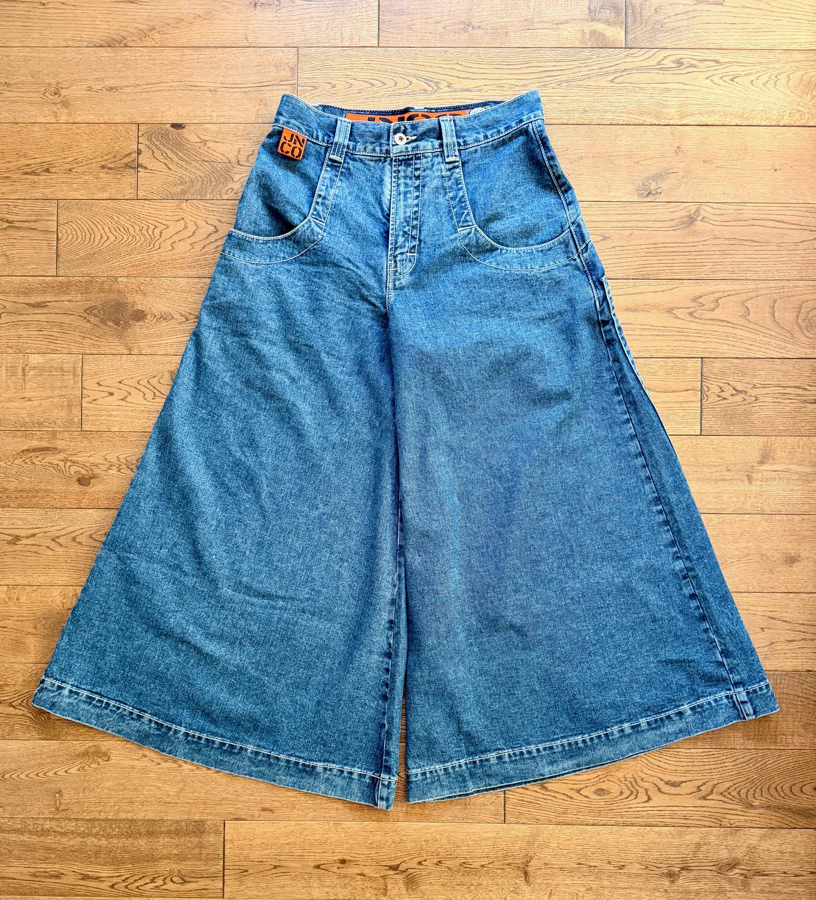
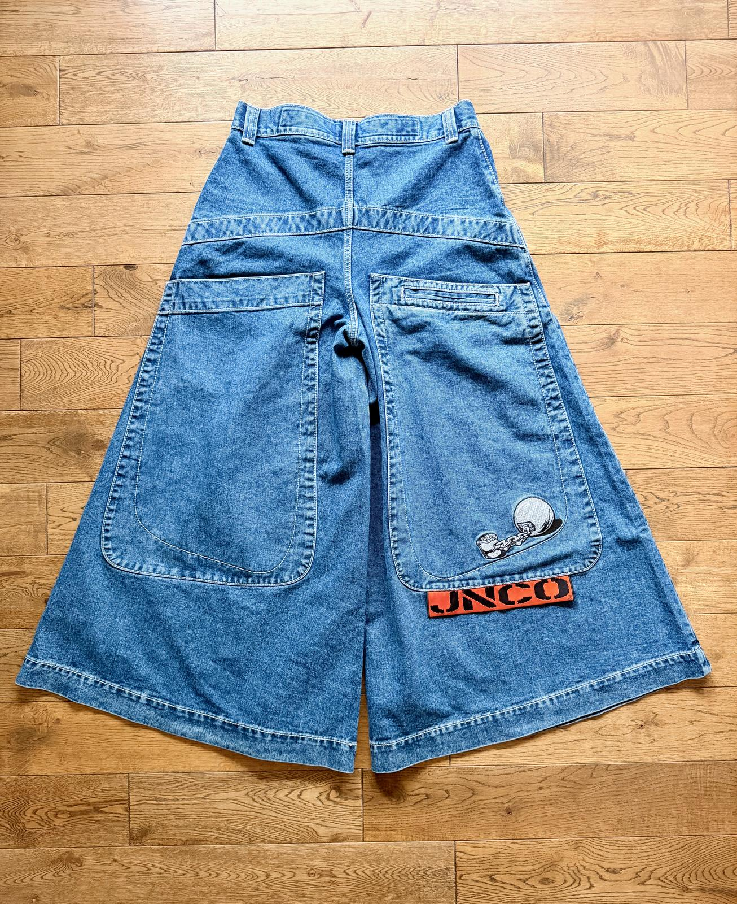
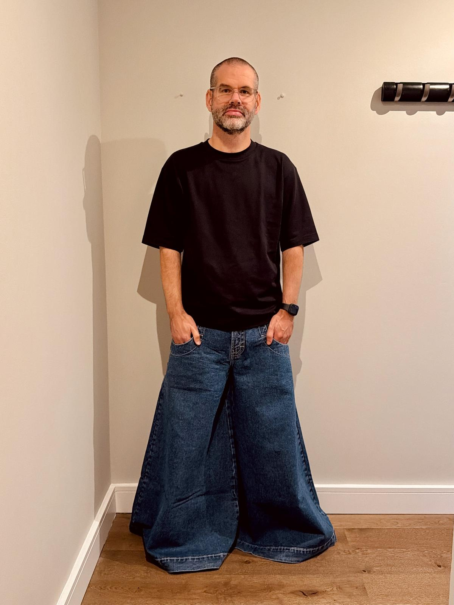
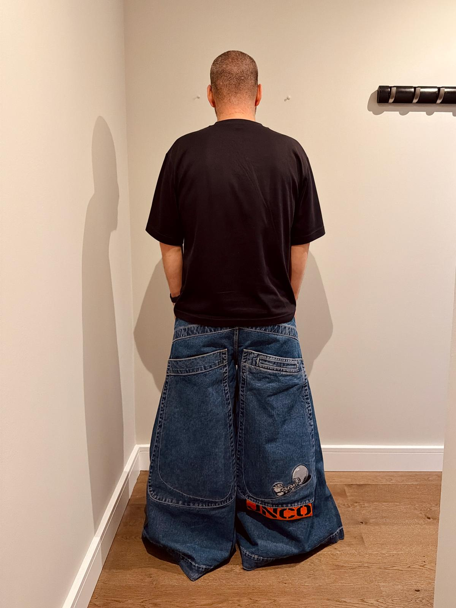
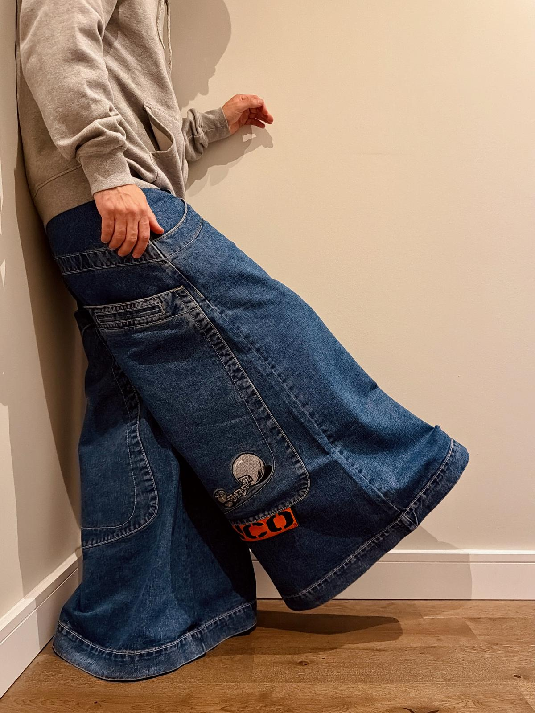
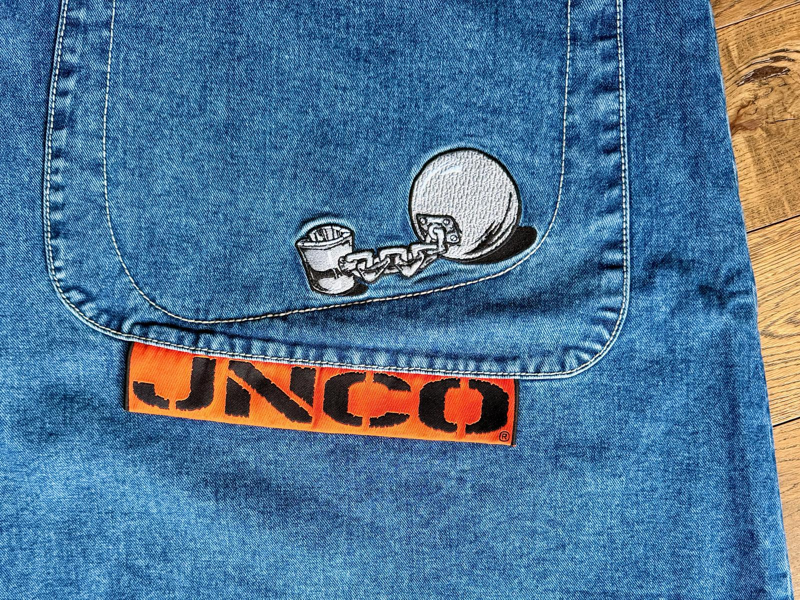

Ok, first things first. There’s no way around it. The Convicts are absolutely bonkers! They don’t make any sense. They are not practical in any way.
Nevertheless, the 50-inch leg openings on the Convicts, and a few other models, are what come to mind first when I think of JNCO. It’s this exact silhouette that has pulled me in all along. And since I apparently wear JNCOs these days, I couldn’t not buy these.


It’s hard to ignore the Convicts, and not just because of how they look. They are just not a very practical pair of jeans. They drag on the ground. They accumulate dirt. You step on them. They get wet. Your shoes and socks get dirty.


But they are so cool! And they are possible to wear. I can put them on, all 1.6 kgs of denim, and go about my day without a care in the world. As long as it’s not raining. And ideally not too many stairs.

What I like the most about the Convicts, though, is the details. That’s what made me pick them over the other 50-inch models. As someone fascinated by handcuffs, prison uniforms and things like that, the ball-and-chain embroidery really speaks to me, and so does the big orange tag below it, which, if you flip it over, says “Correctional Facility Five-0”.
